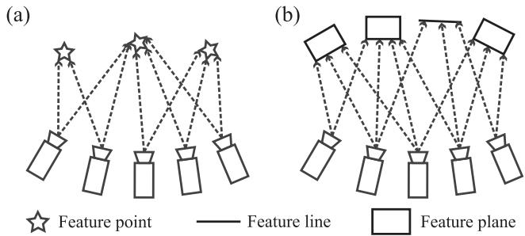
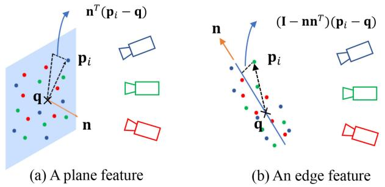
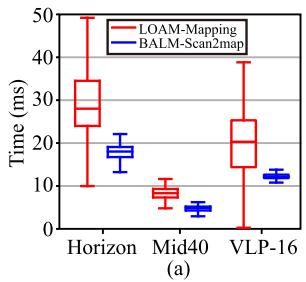

一句话定位：证明激光 BA 可行且能吃满稠密平面/边缘特征——核心是「平面/边缘参数可解析消元，BA 只剩扫描位姿」。

原图注（Fig. 1）：Comparison of BA formulations: (a) visual BA constrains feature points to locate at the same point; (b) our proposed lidar BA constrains feature points to lie on the same edge or plane.（BA 形式对比：视觉 BA 把特征点约束到同一点；激光 BA 把特征点约束到同一条边或同一个面。）
怎么看这张图：(a) 视觉 BA 里多个视角看到同一个点，优化目标是让它们重合到一点；(b) 激光 BA 里点不必重合，而是被「压」到同一条边或同一个面上。这就是把 BA 思想从「点」换成「边/面」的关键一步，也是后面能做闭式消元的伏笔。
2. ★ 核心见解：为什么 BA 能搬上激光
视觉 BA 要同时解「特征点位置」和「相机位姿」两组变量。搬到激光上遇到麻烦：激光点云稀疏、非重复，没法做精确点-点对应。作者的突破是——不要求点-点精确对应，而是最小化「特征点到其所属边/面」的距离；而边/面的参数，可以由点协方差矩阵的特征值直接写出来。
于是「内层对特征参数 (n,q) 的最小化」被闭式化成特征值问题，BA 退化为「仅关于扫描位姿、最小化特征值」，特征参数被彻底消去。这正是第二季 0019 课 Schur 消元、以及第二季 0022 课特征参数闭式消元的同一条思想线：用解析消元降低优化维度。区别只是：视觉 BA 用 Schur 补消去 landmark，激光 BA 用特征值闭式消掉平面/边缘参数。

原图注（Fig. 3）：A feature in space and the corresponding feature points drawn from multiple scans: (a) plane feature; (b) edge feature.（空间中的特征及其在多次扫描中抽出的特征点：平面特征 / 边缘特征。）
怎么看这张图：同一个几何特征（一面墙或一条棱）被多帧扫描从不同位置观测到，散成一簇点。(a) 这簇点摊平在一个平面上，(b) 这簇点排成一条线。BALM 要做的，就是让这些点到「它们所属的面/线」的距离之和最小——而面/线的参数可以闭式求出来。
原图注（Fig. 6）：Results of outdoor walking dataset: (a) the overall map built by BALM, (b) the map built by LOAM. (c) and (d) show the side view near to the start/end point...（室外步行数据集：BALM 建的图 / LOAM 建的图；起终点附近的侧视图。）
怎么看这张图：对比 (a) BALM 与 (b) LOAM 的整体地图，以及起终点附近的侧视特写。BALM 的地图更贴近真实、起终点闭合更紧——对应正文 0.31 m vs 6.228 m 的精度差距。

原图注（Fig. 9）：(a) Time for scan to map alignment in LOAM and our method; (b) The number of voxels and computation time for a local BA over 20 scans.（扫描到地图对齐耗时对比；20 帧局部 BA 的体素数与计算时间。）
怎么看这张图：(b) 显示 20 帧局部 BA 的计算时间多数落在 100 ms 以内，即近 10 Hz 实时——证明「闭式消元 + LM」这套设计真的把 BA 搬到了在线激光 SLAM 上。